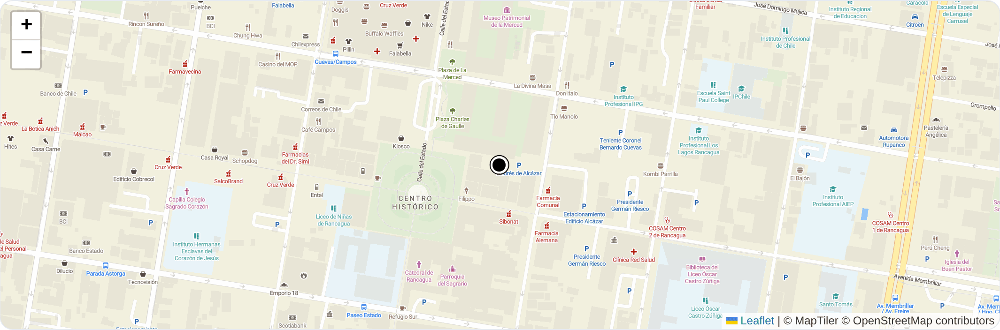

Geolocalización de guardias y Ley 21.719: qué puedes registrar y qué no
Sí se puede, con reglas. Desde el 01-12-2026 la Ley 21.719 trata la ubicación de un trabajador como dato personal: necesitas base legal, finalidad determinada, proporcionalidad y plazo de conservación. Registrar el recorrido mientras la ronda está en curso, para acreditar que se hizo, cumple esas condiciones. Seguir al guardia fuera de su turno, no.
Esta página resume qué cambia para una empresa de seguridad privada que usa GPS en sus rondas, qué dijo la Dirección del Trabajo sobre geolocalización laboral y qué parte del problema resuelve un sistema como SentryCore. Las fuentes están enlazadas al final.

¿Qué exige la Ley 21.719 para geolocalizar a un trabajador?
La ley no prohíbe la geolocalización: la condiciona. Para tratar la ubicación de un trabajador necesitas cumplir cuatro requisitos a la vez.
- Base de licitud. Normalmente el consentimiento libre, informado y específico. Libre significa que negarse no puede costarle el trabajo a la persona.
- Finalidad determinada. Le dices para qué, y ese para qué te obliga: no puedes usar después el mismo dato con otro fin.
- Proporcionalidad. Registras lo mínimo que sirve a esa finalidad. Una posición por minuto durante la ronda es proporcionado; el rastreo continuo del teléfono, no.
- Plazo de conservación. Los datos se eliminan cuando dejan de ser necesarios. Guardar recorridos para siempre es en sí mismo una infracción.
A eso se suman los derechos del trabajador —acceso, rectificación, cancelación y oposición— que tienes que poder atender en plazo.
¿Cuánto puede costar equivocarse?
| Categoría | Ejemplos | Multa máxima |
|---|---|---|
| Leve | Incumplimientos formales o de transparencia, sin daño directo | 5.000 UTM |
| Grave | Tratar datos sin consentimiento ni base legal; impedir el ejercicio de derechos; medidas de seguridad insuficientes | 10.000 UTM |
| Gravísima | Tratamiento fraudulento; ocultar maliciosamente una brecha; incumplir de forma reiterada a la Agencia | 20.000 UTM |
En caso de reincidencia la multa puede triplicarse. Para empresas que no son pyme según la Ley 20.416, la sanción puede calcularse sobre un porcentaje de los ingresos anuales.
¿Puedo exigir el GPS activo durante toda la jornada?
Para el control de asistencia, no. La Dirección del Trabajo lo aclaró en el Ordinario N° 554 del 18 de agosto de 2025: los sistemas electrónicos de control de asistencia pueden incluir georreferenciación en el momento de la marcación, pero no puede exigirse la activación permanente del GPS durante toda la jornada, salvo casos excepcionales —transporte de valores, o cuando una norma legal lo disponga—. Tampoco se puede bloquear la marcación porque el trabajador esté fuera del lugar convenido, y el mecanismo debe estar contemplado en el Reglamento Interno de Orden, Higiene y Seguridad.
Conviene no confundir las dos cosas: acreditar una ronda no es marcar asistencia. Si usas geolocalización para las dos finalidades, cada una necesita su propia justificación, y la de asistencia tiene además los límites del Ordinario 554.
Registrar la ronda no es vigilar a la persona
La distinción que ordena todo lo demás es la ventana de tiempo. Un sistema que solo acepta posiciones mientras la ronda está en curso produce evidencia de que el recorrido se hizo, y nada más. Uno que acepta posiciones a cualquier hora produce, sin quererlo, un registro de la vida privada de un trabajador: dónde vive, a qué hora llega, dónde pasa su día libre. Ese segundo registro es el que se vuelve un problema legal el día que alguien lo pide o se filtra.
Qué hace SentryCore por ti, y qué no
| Lo que exige la ley | Lo que hace el sistema |
|---|---|
| Consentimiento libre e informado | El guardia lee qué se registra, cada cuánto y por cuánto tiempo, y decide antes del turno. Puede negarse y sigue trabajando. Su respuesta queda con fecha y hora. |
| Retiro del consentimiento | Lo revoca desde su teléfono y el registro se detiene de inmediato. |
| Finalidad determinada | La ubicación se usa para acreditar la ronda, y eso es lo que dice el aviso que el trabajador acepta. |
| Proporcionalidad | Una posición por minuto, solo mientras la ronda está en curso. Fuera de esa ventana el servidor rechaza las posiciones: no es una promesa de la aplicación, es una regla del servidor. |
| Plazo de conservación | El recorrido se elimina a los 90 días, automáticamente. |
| Seguridad y separación | Los datos de una empresa no son alcanzables desde otra, y esa separación está impuesta en la base de datos, no en el código de la aplicación. |
Lo que no hace: certificarte. La responsable ante la Agencia de Protección de Datos Personales es tu empresa. Necesitas además tu registro de actividades de tratamiento, tu política interna y, según el caso, tu evaluación de impacto. Ningún software te exime de eso, y desconfía del que diga lo contrario.
Fuentes
- Ley 21.719, que regula la protección y el tratamiento de datos personales y crea la Agencia de Protección de Datos Personales. Publicada el 13-12-2024, en vigencia desde el 01-12-2026. Texto en la Biblioteca del Congreso Nacional.
- Dirección del Trabajo, Ordinario N° 554 del 18-08-2025, sobre georreferenciación en los sistemas electrónicos de control de asistencia.
- Ley 21.659 sobre Seguridad Privada y su reglamento, Decreto 209, publicado el 27-05-2025. Qué exige a tu empresa.
- El control de rondas con NFC, que es la forma de registrar el recorrido sin rastrear al guardia fuera de la ronda. Cómo funciona.
Preguntas frecuentes
¿Se puede registrar por GPS el recorrido de un guardia en Chile?
Sí, pero con reglas. Desde el 1 de diciembre de 2026 rige la Ley 21.719 y la ubicación de un trabajador es un dato personal: hay que tener una base legal, informar la finalidad, registrar solo lo proporcionado a esa finalidad y fijar un plazo de conservación. Registrar el recorrido de una ronda para acreditar que se hizo es una finalidad legítima; seguir al trabajador fuera del turno no lo es.
¿Qué exige exactamente la Ley 21.719 para geolocalizar a un trabajador?
Cuatro cosas: una base de licitud —normalmente el consentimiento libre e informado, que debe poder retirarse—, una finalidad determinada y explicada al trabajador, proporcionalidad entre lo que se registra y esa finalidad, y un plazo de conservación acotado. Además el trabajador conserva sus derechos de acceso, rectificación, cancelación y oposición.
¿Cuánto puede multar la Agencia de Protección de Datos?
La Ley 21.719 clasifica las infracciones en tres niveles: leves, con amonestación o multa de hasta 5.000 UTM; graves, hasta 10.000 UTM, categoría que incluye tratar datos sin consentimiento ni base legal e impedir el ejercicio de derechos; y gravísimas, hasta 20.000 UTM. En caso de reincidencia la multa puede triplicarse.
¿Puedo exigirle al guardia que tenga el GPS activo toda la jornada?
Para control de asistencia, no. La Dirección del Trabajo lo aclaró en el Ordinario N° 554 del 18 de agosto de 2025: la geolocalización se permite en la marcación, pero no puede exigirse su activación permanente durante toda la jornada, salvo casos excepcionales como el transporte de valores. Tampoco se puede impedir la marcación por estar fuera del lugar convenido.
¿Qué diferencia hay entre registrar la ronda y vigilar al trabajador?
La finalidad y la ventana de tiempo. Registrar la ronda significa guardar el recorrido mientras la ronda está en curso, para acreditar que los puntos se recorrieron. Vigilar significa saber dónde está la persona en cualquier momento. La primera es proporcionada a un fin legítimo; la segunda es la que la ley y la Dirección del Trabajo miran con desconfianza.
¿Quién responde ante la Agencia: el software o mi empresa?
Tu empresa. Quien decide para qué se tratan los datos es el responsable, y ese rol no se traspasa contratando un sistema. El software puede darte las herramientas —consentimiento registrado, ventana acotada, eliminación automática— pero la obligación de cumplir, y la multa, quedan en la empresa que opera el servicio.
¿Cómo ayuda SentryCore a cumplir la Ley 21.719?
El guardia lee un aviso antes de empezar y decide: qué se registra, cada cuánto, por cuánto tiempo y para qué. Puede negarse y sigue trabajando igual, y puede revocarlo después desde su teléfono. La posición solo se registra mientras la ronda está en curso —fuera de esa ventana el servidor rechaza los datos— y el recorrido se elimina a los 90 días sin que nadie tenga que acordarse.
¿Lo vemos con tu operación?
Te mostramos el sistema con un recinto tuyo cargado, para que veas el informe con tus puntos y tu recorrido.
Respondemos en horario hábil.